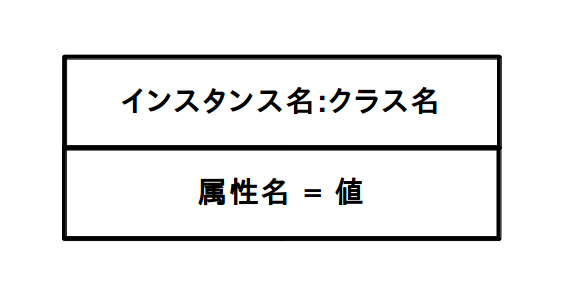
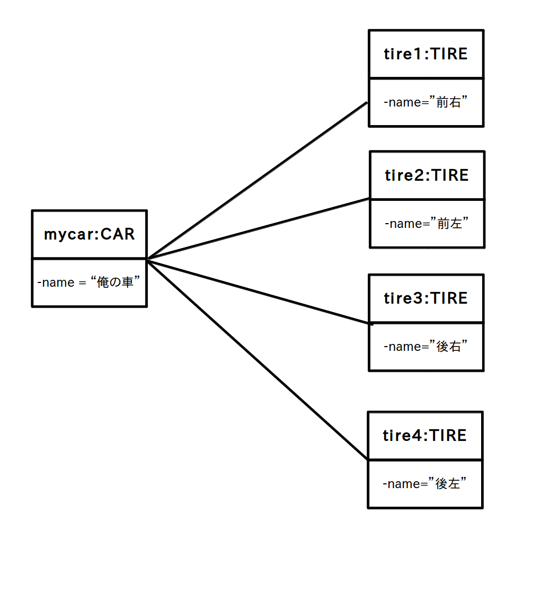

オブジェクト図
「関連」ではクラス間の関係を図にしましたが、「多重度」の意味がよく分からない人が多かったと思います。
この多重度は「オブジェクト図」を使うと理解しやすくなります。
「オブジェクト図」はクラス間ではなく、プログラムが動作中のある時点で存在しているインスタンス間の具体的な関係を示す図(スナップショット)です。
1つのインスタンスからなる基本的なオブジェクト図の描き方は次のようになります。
図1 オブジェクト図の基本 (クリックで拡大)

この様に、クラス名の隣に具体的なインスタンス名を記入します。
また属性にはスナップショットを撮った時点における現在値を入れます。
さてインスタンス間に関連がある場合はクラス図と同様にリンクで繋ぎますが、「あるクラスのインスタンスから他のクラスのインスタンスに張るリンク数は多重度と同じ」になります。
例えば前のページに出てきた関連のクラス図の例
図2 関連のクラス図の例 (クリックで拡大)

を元にして適当にインスタンスを作った直後のオブジェクト図が次の図3です。
CAR クラスから作ったインスタンス mycar からは TIRE クラスから作ったインスタンス tire1、tire2、tire3、tire4 へリンクが4本張られています。
つまり「mycar には tire1, tire2, tire3, tire4 がついている」ことを示しています。
逆に tire1 から mycar を見ると 1 本しかリンクが張られていません(tire2,3,4も同様)。
つまり「tire1 は mycar に取り付けられている」・・・「tire4 は mycar に取り付けられている」ことを示しています。
図3 図2を元にして作ったオブジェクト図の例 (クリックで拡大)

この様にオブジェクト図は多重度を理解するためには便利なツールですが、実際のシステムではインスタンスは不特定多数になることが多いのでオブジェクト図を設計時に描くことはあまりありません。
よってエンジニアにはオブジェクト図を脳内で意識しながらクラス図を描くという技能が必要になります。